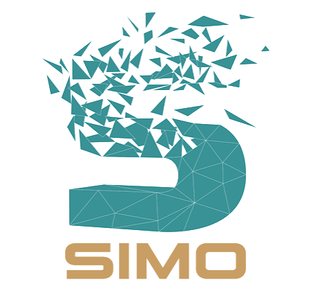
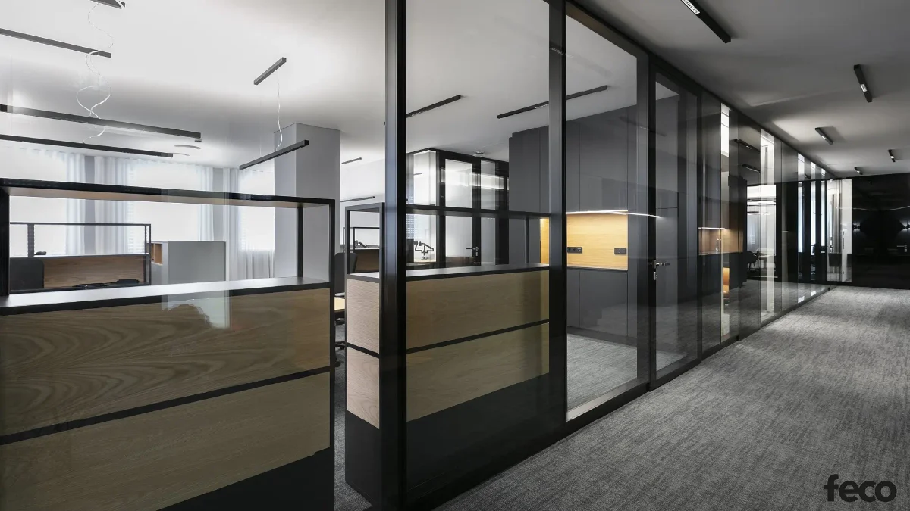

{{ b.num }}
{{ b.title }}
{{ b.lead }}
{{ b.body }}



Van már terv, kiírás vagy konkrét műszaki kérdés? Küldje el a rendelkezésre álló dokumentációt, és induljunk abból, ami a projektben már ismert.
A specifikációtól a biztos megvalósításig.
Egy jól megtervezett tér önmagában még nem garancia a jó végeredményre.
A specifikációnak, a műszaki részleteknek, a gyártásnak és a kivitelezésnek ugyanazt a koncepciót kell szolgálnia.
A térelválasztási rendszerekről ritkán egyetlen ember dönt. A tervező specifikál, a kivitelező a megvalósíthatóságot vizsgálja, a beruházó az értéket mérlegeli, az üzemeltető pedig azt, mi történik az átadás után.
{{ audienceTension }}
Ezért ugyanannak a megoldásnak több szakmai kérdésre is választ kell adnia.
Egy belsőépítészeti projektben más kérdésre keres választ a tervező, a kivitelező és a beruházó. Válassza ki a szerepét, és megmutatjuk a releváns megoldásokat, dokumentációkat és döntési szempontokat.
Egy referencia számunkra nemcsak a végeredményt mutatja meg. Azt is, milyen tervezési, műszaki vagy kivitelezési kérdést kellett megoldani ahhoz, hogy a tér valóban működjön.
A tervezés és a specifikáció során a megfelelő dokumentáció csökkenti a későbbi kérdések számát.
A műszaki központban egy helyen érhetők el a SIMO rendszereihez kapcsolódó tervezési és döntéstámogató anyagok.
A specifikáció, az akusztika, a kivitelezhetőség vagy a hosszú távú térhasználat kérdései ritkán válaszolhatóak meg egyetlen termékadattal.
Szakmai tartalmaink célja, hogy érthetőbbé tegyék ezeket az összefüggéseket, és használható döntési szempontokat adjanak tervezéshez, kivitelezéshez és beruházáshoz.
Nem szükséges minden részletnek véglegesnek lennie az első egyeztetéshez.
Ha már rendelkezésre áll alaprajz, koncepció, kiírás vagy konkrét műszaki kérdés, abból el tudjuk kezdeni a projekt áttekintését. Ha a projekt még korábbi fázisban van, specifikációs vagy műszaki konzultációval tudjuk támogatni a következő döntést.